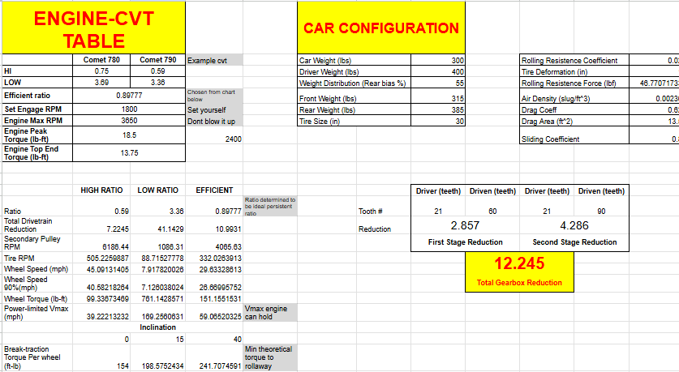

Packaging the drivetrain
I led 12 engineers on the 2026 Baja SAE powertrain. I owned the overall layout in SolidWorks and coordinated how the engine, continuously variable transmission (CVT), jackshaft, and chain drive fit together. The chassis set the space available. The belt and chain also needed room for their guards.
I compared gear ratios, chain selections, and shaft designs against the torque we wanted at the wheels and the space we had to build in. A ratio could work on paper and still put a sprocket or guard too close to the frame. I checked those choices in the vehicle assembly before we committed to fabrication.



Building and inspecting the assembly
I coordinated machining, welding, and assembly with the manufacturing group. We used the capabilities of our own shop when we chose how to make the mounts and guards. At assembly, the team had to locate each shaft and sprocket so the chain ran in line within the available clearance.
I used our design failure mode and effects analysis (DFMEA) to write assembly and inspection procedures. Those procedures cut our pre-competition build time by about 15%.
Checking the design under load
Working with the validation team, I led a thermal and airflow study of the CVT housing. The question was whether the guard layout restricted cooling during sustained operation. We used the simulated flow and temperature patterns to identify areas to revise.

During endurance testing, I led root-cause investigations into at least five powertrain failures. I documented what failed, presented corrective actions to team leadership, and took those changes back into testing. The failure modes we corrected did not recur in subsequent testing.
Results
The drivetrain was about 12% lighter while maintaining a design safety factor of 2 under the competition load case. The safety factor comes from the design analysis. Our physical evidence came from the assembled vehicle, where endurance runs exposed failure modes that we could trace and correct.